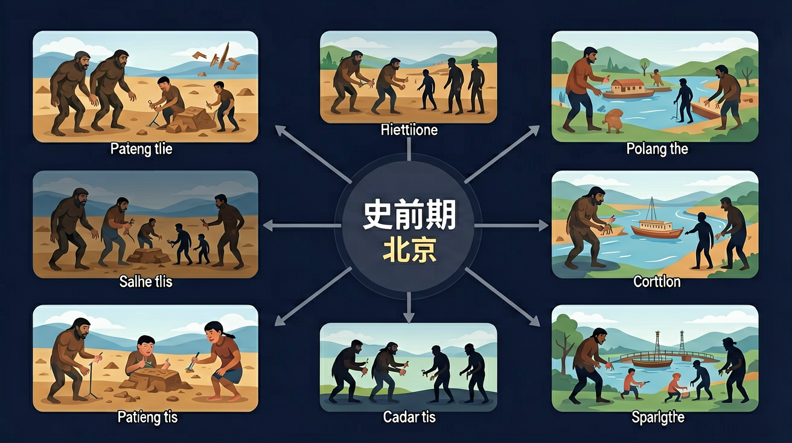

通过了解元谋人、蓝田人、北京人等旧石器时代的人类及其文化遗存，知道中国境内原始社会时期的人类活动。

🎯 能说出元谋人、北京人、半坡遗址、河姆渡遗址的距今时间
🎯 能判断史前人类生产工具的主要材质和用途
🎯 能分析半坡与河姆渡聚落差异的地理原因
❓ 北京人为什么住在山洞里？
❓ 半坡人和河姆渡人谁更早学会种水稻？
❓ 元谋人真的会用火吗？
学完这一课，这些问题你都能自信地回答。
我国境内目前确认的最早古人类是？
下列哪项是半坡居民的主要粮食作物？
史前时期（元谋人/北京人/半坡/河姆渡）是初中历史的重要内容。通过了解元谋人、蓝田人、北京人等旧石器时代的人类及其文化遗存，知道中国境内原始社会时期的人类活动。
通过了解河姆渡、半坡、良渚、陶寺等新石器时代的文化遗存，知道中国的原始农耕生活。
点击时代/图层按钮切换地图；悬停边界，点击城市标记查看说明。
中国境内远古人类遗址说明我国是早期人类活动的重要地区。北京人会使用打制石器与火；河姆渡、半坡等新石器文化已种植作物、制作陶器，过定居生活。学习时要区分旧石器与新石器，并用考古发现说明人类进步。
记史前人先抓：用什么工具、会不会用火、是否农耕定居。材料优先看遗址与器物，传说只能作辅助。
常见误区：常见误区是把神话传说直接当成考古事实，或分不清旧石器与新石器。
半坡居民主要从事？
And：学生见过石头工具图片
But：不理解原始人如何靠石头生存
Therefore：认识劳动工具决定文明水平
旧石器时代人类用打制石器，比如北京人用砾石做的砍砸器能敲碎动物骨头；新石器时代出现磨制石器，河姆渡出土的骨耜（sì）长18厘米，能高效挖土。从打制到磨制，人类用了约200万年！就像从撕包装进化到用剪刀，劳动效率翻天覆地。
🌍 就像现在用美工刀裁纸比撕纸整齐，半坡人用磨制石刀收割粟米，每亩产量比徒手采集多了5倍。工具进步直接改变生活质量！
下列哪项是磨制石器特点？
按时间轴拆解四个典型遗址的先后关系
从环境适应角度分析穴居与干栏式建筑的差异
对比半坡粟作与河姆渡稻作农业的分布特点
通过文物图片识别打制石器与磨制石器的区别
用史前人类适应环境的智慧解释现代民居差异
复制提示词到 AI 学伴，生成「史前时期（元谋人/北京人/半坡/河姆渡）」的时间轴或事件提纲；也可以上传你手绘的示意图，请 AI 学伴点评。
复制后可粘贴到 AI 学伴继续对话。
关于史前时期表述正确的是
对比半坡与河姆渡房屋复原图
关于史前时期（元谋人/北京人/半坡/河姆渡）的学习，哪种做法最科学？
选一个并查看反馈。
先独立作答，再点选项查看对错与错因。
考古队在周口店遗址发现多层灰烬层，最可能证明北京人
半坡遗址出土的粟粒和河姆渡遗址的稻谷，说明原始农业
下列哪项属于河姆渡人生活特征？
元谋人牙齿化石发现于____省，距今约____万年
答案：云南,170
我国境内最早人类遗址
半坡遗址房屋呈____结构，河姆渡房屋采用____技术
答案：半地穴式,榫卯
北方防寒与南方防潮的不同建筑智慧
✅ 北京人住天然洞穴，半坡人才会建造半地穴房屋
💡 混淆不同时期人类居住方式的发展阶段
✅ 河姆渡位于长江流域，是南方稻作农业代表
💡 地理方位记忆混淆
口诀：元谋最早北京火，半坡粟来河姆稻
类比：就像不同班级有各自的班规，史前人类根据环境发展出不同生活方式
考古发现北京人遗址有灰烬层，说明北京人？
河姆渡干栏式建筑主要适应哪种环境？
如果发现某遗址有碳化稻谷和猪骨，最可能属于？
点击节点跳转到对应章节；可切换布局。